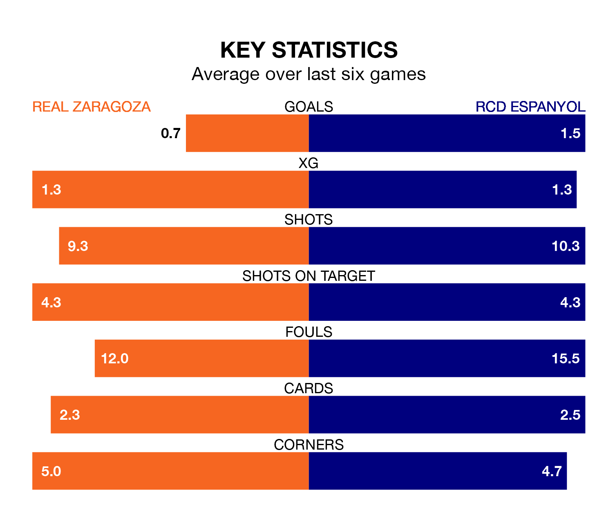

Real Zaragoza face RCD Espanyol at Estadio de la Romareda on late Sunday looking to secure a first win in six Segunda División games.
Zaragoza have lost four and drawn one matches since they last earned three points – against Sporting Gijón on February 5.
They face an Espanyol side who have won two and drawn two over that time.
With 47 goals in 30 games so far this season, Espanyol are the league's second-highest scorers with 1.6 goals per game. And they are conceding at an average rate, letting in 34 goals at a rate of 1.1 per game.
Zaragoza, meanwhile, are below average scorers, with 0.9 goals per game, compared to a league average of 1.1. They have also conceded 0.9 goals per game.
In Martin Braithwaite, the visitors have the league's sharpest shooter so far this season. He has notched 18 goals in 28 appearances.
His goal rate of one every 137 minutes is quicker than that of Maikel Mesa Piñero, the home side's top scorer with a goal every 256 minutes, and a total of eight goals in 29 games.
Espanyol are third in the table after 30 games, of which they have won 13 and drawn 10, earning 49 points.
Zaragoza are 11 places behind Espanyol in 14th, with nine wins and 10 draws putting them on 37 points.
Zaragoza's last match was on March 9, a 2-0 loss against Real Valladolid.
Espanyol drew 1-1 with AD Alcorcón last time out, on Sunday, with Braithwaite on the scoresheet.
Sunday's match will be refereed by Dámaso Arcediano Monescillo, who has taken charge of 14 Segunda División games so far this season, issuing five red cards and booking 62 players. He has awarded one penalty.
The last Zaragoza game Arcediano Monescillo refereed was a 1-1 away draw with RCD Espanyol on December 8. His last Espanyol match was their 2-1 win at home against Levante UD on February 4.
Updated: 15:10 (UTC), 15/03/24